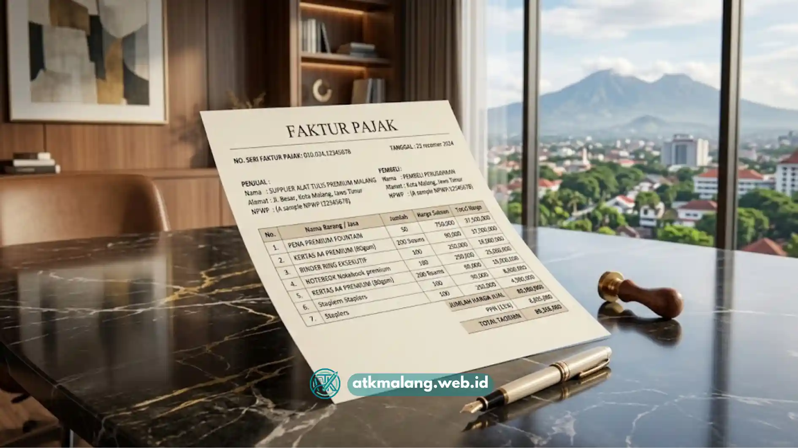

Pengadaan Alat Tulis Kantor Malang yang resmi dan berlegalitas pajak melibatkan tahapan pendataan kebutuhan, seleksi supplier terdaftar, penerbitan purchase order, hingga pencatatan faktur pajak sesuai ketentuan yang berlaku.
- Prosedur pengadaan resmi dimulai dari pendataan kebutuhan barang secara rinci oleh divisi terkait.
- Pemilihan supplier sebaiknya mempertimbangkan legalitas usaha, termasuk kepemilikan NPWP dan kemampuan menerbitkan faktur pajak.
- Purchase order menjadi dokumen kunci yang mengikat kesepakatan harga dan spesifikasi barang.
- Faktur pajak diperlukan agar transaksi dapat dicatat secara sah dalam pembukuan perusahaan.
- Arsip dokumen pengadaan sebaiknya disimpan rapi untuk kebutuhan audit internal maupun eksternal.
Daftar Isi
- Bagaimana Tahapan Prosedur Pengadaan ATK Kantor yang Resmi
- Dokumen Apa Saja yang Diperlukan agar Pengadaan Berlegalitas Pajak
- Siapa Pihak yang Bertanggung Jawab dalam Proses Pengadaan
- Bagaimana Memilih Supplier ATK yang Legal dan Kredibel di Malang
- Kesalahan yang Perlu Dihindari dalam Pengadaan ATK Kantor
Bagaimana Tahapan Prosedur Pengadaan ATK Kantor yang Resmi
Tahapan prosedur pengadaan atk kantor yang resmi umumnya dimulai dari identifikasi kebutuhan, permintaan penawaran harga, persetujuan anggaran, penerbitan purchase order, hingga penerimaan barang dan dokumen pajak.
Proses ini biasanya diawali dengan divisi terkait mengajukan daftar kebutuhan atk kepada bagian procurement. Bagian procurement kemudian meminta penawaran harga dari satu atau beberapa supplier di Malang untuk dibandingkan dari sisi harga, kualitas, dan waktu pengiriman.
Setelah penawaran dipilih, dokumen tersebut diajukan kepada pihak berwenang, misalnya manajer keuangan atau direktur, untuk mendapatkan persetujuan anggaran. Setelah anggaran disetujui, procurement menerbitkan purchase order kepada supplier terpilih. Purchase order ini memuat rincian barang, jumlah, harga satuan, serta tenggat waktu pengiriman. Setelah barang diterima dan dicek kesesuaiannya, supplier menerbitkan faktur sebagai bukti transaksi resmi yang kemudian dicatat oleh bagian keuangan.
Dokumen Apa Saja yang Diperlukan agar Pengadaan Berlegalitas Pajak
Dokumen utama yang diperlukan agar pengadaan atk berlegalitas pajak meliputi purchase order, surat jalan atau bukti pengiriman, serta faktur pajak yang diterbitkan oleh supplier terdaftar.
Purchase order berfungsi sebagai bukti kesepakatan awal antara kantor dan supplier mengenai jenis barang, jumlah, dan harga. Surat jalan digunakan untuk mencatat bahwa barang telah dikirim dan diterima sesuai pesanan. Faktur pajak menjadi dokumen penting karena mencantumkan nilai transaksi beserta pajak yang berlaku, sehingga dapat digunakan sebagai dasar pencatatan akuntansi dan pelaporan pajak perusahaan.
Selain ketiga dokumen tersebut, kantor juga sebaiknya menyimpan bukti pembayaran, baik berupa transfer bank maupun metode pembayaran lain, sebagai pelengkap arsip transaksi. Kelengkapan dokumen ini penting terutama bagi kantor yang harus melalui proses audit internal maupun pemeriksaan pajak dari otoritas terkait.

Proses serah terima barang harus selalu disertai dengan dokumen surat jalan dan faktur yang sah.Siapa Pihak yang Bertanggung Jawab dalam Proses Pengadaan
Pihak yang umumnya bertanggung jawab dalam proses pengadaan atk kantor adalah tim procurement atau admin umum, dengan persetujuan akhir dari manajer keuangan atau pejabat berwenang lainnya.
Pada kantor berskala kecil, proses pengadaan sering kali ditangani langsung oleh admin umum tanpa divisi procurement khusus. Sementara pada kantor berskala menengah hingga besar, biasanya terdapat tim procurement yang bertugas mengelola seluruh proses mulai dari seleksi supplier hingga evaluasi kinerja pengadaan secara berkala.
Pembagian tanggung jawab yang jelas membantu mencegah tumpang tindih wewenang dan memastikan setiap transaksi memiliki jejak persetujuan yang dapat dipertanggungjawabkan.
Bagaimana Memilih Supplier ATK yang Legal dan Kredibel di Malang
Cara memilih supplier Alat Tulis Kantor yang legal dan kredibel di Malang adalah dengan memeriksa kepemilikan NPWP, kemampuan menerbitkan faktur pajak, serta rekam jejak pelayanan kepada klien sebelumnya.
Kantor dapat meminta salinan dokumen legalitas usaha supplier, seperti NPWP dan izin usaha, sebelum menandatangani kerja sama jangka panjang. Selain itu, penting untuk menanyakan secara langsung apakah supplier dapat menerbitkan faktur pajak sesuai ketentuan yang berlaku, karena tidak semua penjual eceran memiliki kapasitas administrasi tersebut.
Rekam jejak pelayanan, seperti ketepatan waktu pengiriman dan konsistensi kualitas barang, juga menjadi pertimbangan penting yang dapat ditelusuri melalui testimoni klien lain.
Kesalahan yang Perlu Dihindari dalam Pengadaan ATK Kantor
Kesalahan yang perlu dihindari dalam pengadaan atk kantor adalah tidak memeriksa legalitas supplier sebelum bertransaksi, sehingga menyulitkan proses pencatatan pajak di kemudian hari.
Kesalahan lain yang cukup umum terjadi adalah tidak menyimpan dokumen pengadaan secara terorganisir, sehingga sulit ditelusuri saat dibutuhkan untuk audit. Beberapa kantor juga kerap melewatkan proses verifikasi barang saat penerimaan, padahal langkah ini penting untuk memastikan jumlah dan kualitas barang sesuai dengan yang tercantum di purchase order.
Kelalaian semacam ini dapat menimbulkan selisih pencatatan yang merepotkan tim keuangan di kemudian hari. Pengadaan atk kantor Malang yang resmi dan berlegalitas pajak memerlukan tahapan yang tertib, mulai dari pendataan kebutuhan hingga penerbitan faktur pajak oleh supplier terdaftar. Memilih supplier dengan legalitas jelas serta menyimpan dokumen pengadaan secara rapi akan memudahkan kantor dalam proses pencatatan keuangan dan pelaporan pajak, sekaligus meminimalkan risiko masalah administratif di masa mendatang.